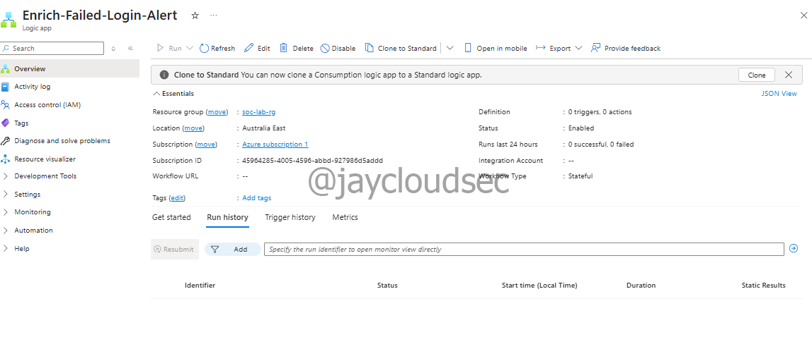
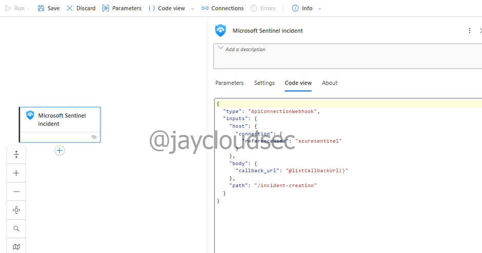
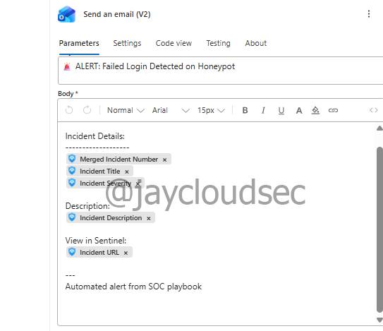
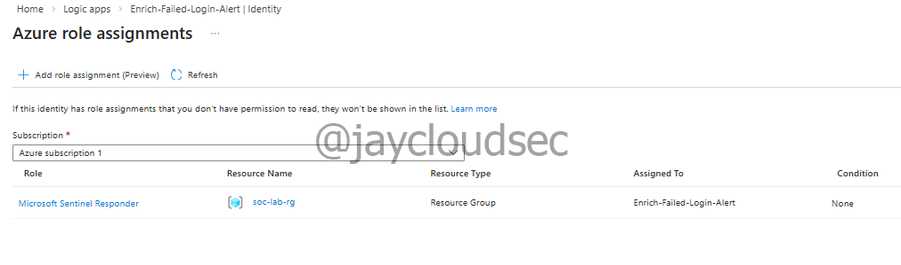
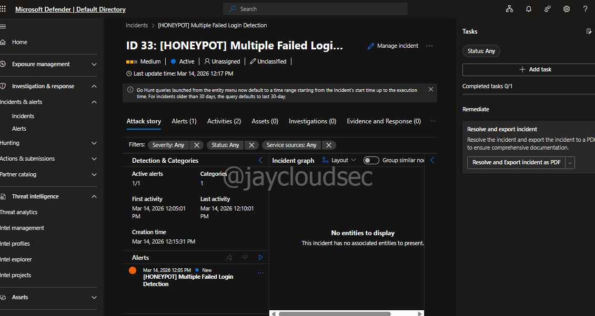
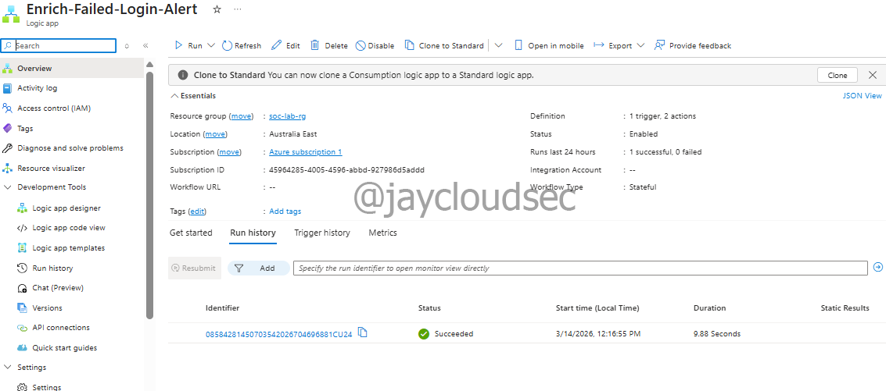
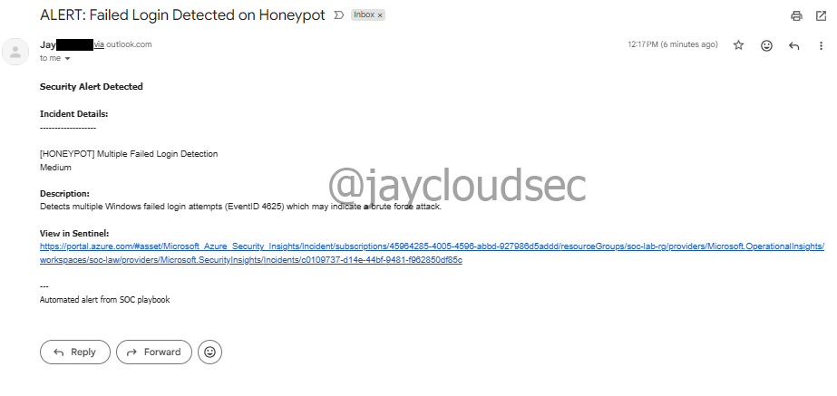

Lab 04 — Automated SOC Incident Response
Overview
This write-up documents the implementation of an automated incident response workflow using Microsoft Sentinel and Azure Logic Apps. The playbook automatically detects failed login incidents on the honeypot environment and delivers real-time email notifications to the security team — eliminating manual triage for known alert patterns.
Validation was conducted in two phases: a controlled internal test and an overnight production run against real-world attack traffic. The automation achieved a 100% success rate across 21 real incidents, with an average response time under 2 minutes per alert.
Environment
The following architecture was used for this lab:
Microsoft Sentinel Alert Triggered
↓
Automation Rule
↓
Logic App Playbook
↓
├──▶ Extract Incident Data
│
└──▶ Send Email NotificationTechnologies used:
- Microsoft Azure
- Microsoft Sentinel
- Azure Logic Apps
- Microsoft Entra ID (Managed Identity)
- Azure Role-Based Access Control (RBAC)
- Email (Outlook.com connector)
Playbook Architecture
The playbook operates as a Sentinel-integrated Logic App that fires on incident creation. The automation rule acts as the gatekeeper — evaluating whether the triggering analytics rule matches the defined conditions before invoking the playbook. Once triggered, the Logic App extracts incident metadata dynamically and composes a structured email notification.
This design separates detection logic (Sentinel analytics rules) from response logic (Logic App), keeping each layer independently maintainable and extensible.
Logic App Configuration
The Logic App was configured with the following settings:
- Logic App Name:
Enrich-Failed-Login-Alert - Region: Australia East
- Plan Type: Consumption (pay-per-execution)
- Workflow Type: Stateful
The Consumption plan was selected intentionally — at typical SOC alert volumes the per-execution cost is negligible (approximately $0.0001 per run), and the stateful workflow type ensures full execution history is retained for audit and troubleshooting.

Logic App created in Australia East with Consumption plan and Stateful workflow type
Trigger Configuration
The playbook trigger is the native Sentinel incident connector:
Trigger: "When Azure Sentinel incident creation rule was triggered"
This trigger provides structured access to the following incident fields at runtime:
- Incident number
- Incident title
- Severity
- Description
- Incident URL (direct link to Sentinel)
All fields are surfaced as dynamic content tokens, allowing downstream actions to reference them without manual parsing or additional API calls.

Sentinel incident creation trigger configured as the Logic App entry point
Email Notification Action
The notification action uses the Outlook.com connector to deliver a structured alert email to the security team.
| Field | Value |
|---|---|
| Connector | Outlook.com |
| Subject | 🚨 ALERT: Failed Login Detected on Honeypot |
| Body | Incident ID, Title, Severity, Description, Sentinel URL |
| Content population | Dynamic — auto-populated from trigger tokens |
Dynamic content tokens are bound directly to the email body fields, meaning the notification is fully populated from live incident data with no hardcoded values. Every email contains actionable context that allows the analyst to assess and triage without opening Sentinel first.

Email notification action configured with dynamic incident fields from the Sentinel trigger
Managed Identity & RBAC
The Logic App authenticates to Microsoft Sentinel using a system-assigned managed identity — the recommended approach for service-to-service authentication in Azure.
Managed identity configuration:
- Identity type: System-assigned
- Registered with: Microsoft Entra ID
- Credential storage: None — no secrets, keys, or passwords stored in code or configuration
RBAC role assignment:
- Role: Microsoft Sentinel Responder
- Scope: Resource group (
soc-lab-rg) - Permissions granted: Read incidents, update incident properties, add comments
Scoping the role to the resource group rather than the subscription follows the principle of least privilege — the Logic App can only interact with resources within the defined boundary.

Microsoft Sentinel Responder role assigned to the Logic App managed identity at resource group scope
Automation Rule Configuration
The automation rule controls when the playbook executes within Sentinel.
| Setting | Value |
|---|---|
| Rule name | Auto-Enrich-Failed-Login-Alerts |
| Trigger | When incident is created |
| Condition property | Analytic rule name |
| Operator | Contains |
| Matched rules | [HONEYPOT] Brute Force Login Detection, [HONEYPOT] Multiple Failed Login Detection |
| Action | Run playbook → Enrich-Failed-Login-Alert |
| Expiration | Indefinite |
Both detection rules were explicitly added to the condition. This proved critical during testing — see the Troubleshooting section for details.

Automation rule configured to trigger the playbook on incidents from both honeypot detection rules
Testing & Validation
Failed login attempts were simulated using Azure VM Run Command to trigger the detection rules without external exposure:
for ($i=0; $i -lt 15; $i++) {
net use \\127.0.0.1\IPC$ /user:testautomation wrongpassword
}First test — Incident ID 29 (failed):
The automation rule did not trigger. Root cause: the condition value was configured to match only one detection rule. The incident was generated by the other rule, so the condition evaluated false and the playbook was not invoked.
Resolution: updated the automation rule to explicitly include both detection rules in the condition.
Second test — Incident ID 30 (successful):
- Simulation executed successfully
- Logs ingested within 5–10 minutes
- Detection rule fired at scheduled interval
- Incident created (ID 30)
- Automation rule triggered immediately
- Playbook executed successfully
- Email delivered within 1–2 minutes

Logic App run history showing successful execution for Incident ID 30

End-to-end automation verified — incident created, playbook triggered, email delivered
Production Validation
Following successful internal testing, the honeypot VM was left running overnight to validate the automation against real-world attack traffic.
| Metric | Result |
|---|---|
| Honeypot runtime | ~12 hours (overnight) |
| Incidents detected | 21 |
| Automated emails sent | 21 |
| Logic App executions | 21 successful |
| Failed executions | 0 |
| Automation success rate | 100% (21/21) |
| Average response time | <2 minutes per incident |
The automation handled every real-world incident without intervention. Execution was consistent across the full 12-hour window, confirming the workflow is production-ready.
Troubleshooting
Automation rule condition mismatch
Issue: Playbook did not execute for Incident ID 29 despite a valid incident being created. Cause: the automation rule condition matched only one of the two detection rules. The triggering incident was created by the unmatched rule, so the condition evaluated false. Resolution: updated the automation rule to select both detection rules explicitly. Lesson: always verify that condition values cover all analytics rules capable of generating the target incident type.
Email delivered to spam folder
Observation: automated emails from the Logic App were initially flagged as spam. Resolution: sender address added to safe senders list. In production environments, authenticated email services such as Office 365 or SendGrid should be used to ensure reliable delivery.
Migration to Microsoft Defender portal
Observation: Microsoft Sentinel features are progressively migrating to the unified Microsoft Defender portal. Incidents now surface under Defender → Incidents and Response, and automation rules may redirect to the Defender portal. Core functionality is unchanged.
MITRE ATT&CK Mapping
| Technique | ID | Automated Response |
|---|---|---|
| Brute Force | T1110 | Detection triggers playbook → security team notified automatically |
| Valid Accounts | T1078 | Credential abuse incidents generate immediate alert email |
| Remote Services: RDP | T1021.001 | Failed RDP login detections routed through automated response workflow |
Analyst Conclusion
This lab demonstrates how SOAR tooling directly reduces mean time to respond (MTTR) by eliminating the manual triage step for known alert patterns. A security analyst no longer needs to poll Sentinel for new incidents — the environment notifies them in real time with context sufficient for immediate assessment.
The 100% automation success rate across 21 real incidents confirms the workflow is reliable under genuine attack conditions, not just controlled test scenarios.
Recommended enhancements for production deployment:
- Threat intelligence integration — enrich incidents with VirusTotal and AbuseIPDB lookups before notification
- Multi-channel notifications — route critical severity alerts to Microsoft Teams or Slack in addition to email
- Automated containment — add an NSG rule action to block the offending IP on incident creation
- Incident enrichment — append geolocation and ASN data to the incident directly in Sentinel, not just the email
- Ticketing integration — create a ServiceNow ticket automatically for each incident to feed the formal response workflow
- Escalation logic — add a conditional branch to page on-call staff for Critical severity incidents
The broader takeaway: automation does not replace analyst judgment — it removes the latency between detection and human awareness. Every minute saved on alert notification is a minute gained for actual investigation and containment.